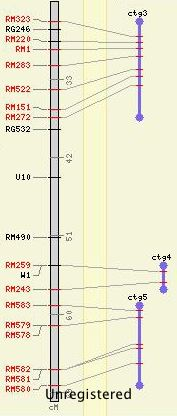
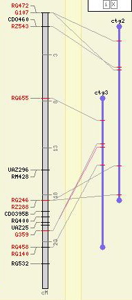
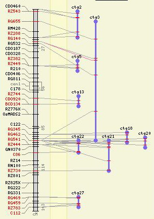

| Maps can either stand on their own or must be shown in relation to some other map. The latter are called "relational" maps in CMap. When a map set is tagged as having "relational only" maps, then this applies to all the maps in the set. In order to view these relational maps, the user must first select some "reference map" which has correspondences to some of the relational maps. The choice of exactly which maps are shown in the image is determined by CMap -- only maps with correspondences to the reference map are displayed. | |
|
Normally, all maps are drawn to the full height available in the image, like the map on the left in this image. No effort is made to scale maps to one another, even if they are in the same map units (e.g., one "centimorgan" can represent different distances in different studies). When a relational map is drawn next to a reference map, however, it is drawn to a length in pixels equal to the distance covered by all the correspondences on the reference map. The contigs shown to the right demonstrate this. In the cases of "ctg2" and "ctg3," the tops and bottoms of the maps are equal (more or less) to the top and bottom positions of the correspondences. The other three contigs, have either just one correspondence or have all their correspondences clustered in one location on the reference map, so they are drawn to a minimum pixel height. The placement of features on the relational maps works just it does for any other map. They are drawn at a location relative to their distance along the map -- that is, the entire pixel length of the map is assumed to represent the entire relational map, and features are placed at a pixel distance on the map equivalent to their start/stop positions divided by the overall length of the map. You can determine the shape, color and width of the maps in a relational map set just as you would any other map. |
 |
| As you zoom in, it follows that the relational maps will lengthen to accomodate the greater pixel distance covered by the correspondences, as illustrated in this image: |  |
| However, this view of the entire reference map shows that our original view left off the furthest correspondence to map "ctg3." In this view, "ctg3" is far larger than "ctg2" whereas in the previous two views they were close to the same size. |  |